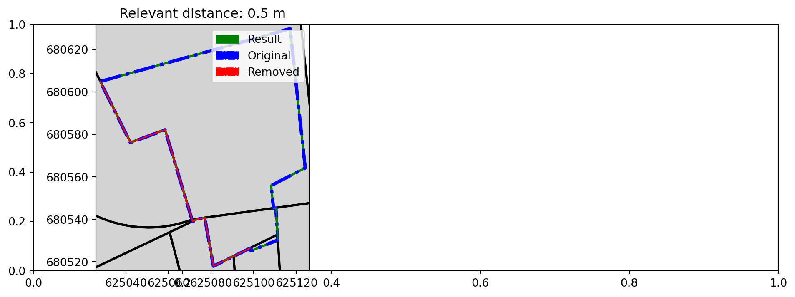

Code
from pyproj import Transformer
from shapely.ops import transform
from brdr.aligner import Aligner
from brdr.be.grb.enums import GRBType
from brdr.be.grb.loader import GRBActualLoader
from brdr.be.oe.enums import OEType
from brdr.be.oe.loader import OnroerendErfgoedLoader
from brdr.loader import DictLoader
from brdr.viz import show_map
def transforms_geom_31370_to_3812(geom):
"""
Transforms a Shapely (Multi-)Polygon from EPSG:31370 to EPSG:3812.
"""
transformer = Transformer.from_crs("EPSG:31370", "EPSG:3812", always_xy=True)
return transform(transformer.transform, geom)
if __name__ == "__main__":
# 1) Load data in Lambert72 & Align to reference layer (72)
##################################################################
# BASE
# =====
# Initiate an Aligner to create a dataset that is base-referenced on a specific base_year
aligner72 = Aligner(crs="EPSG:31370")
print("start loading OE-objects")
# Load the thematic data to evaluate
loader = OnroerendErfgoedLoader(
objectids=["https://id.erfgoed.net/aanduidingsobjecten/121125"],
oetype=OEType.AO,
)
aligner72.load_thematic_data(loader)
print(
"Number of OE-thematic features loaded into base-aligner: "
+ str(len(aligner72.thematic_data.features))
)
aligner72.load_reference_data(
GRBActualLoader(grb_type=GRBType.ADP, partition=1000, aligner=aligner72)
)
print("Reference-data loaded")
#
rd = 2
aligner_result72 = aligner72.process(relevant_distances=[rd])
print(
"Processed: the data-object is now fully aligned to the reference-data in Lambert72"
)
dict08 = {}
# transform features (72-->2008)
print(
"Next, we do a transformation of the data-object to Lambert08, possibly resulting in some deviations"
)
for key, processresult in aligner_result72.results.items():
dict08[key] = transforms_geom_31370_to_3812(processresult[rd]["result"])
# Align to GRB (2008)
print(
"We make a new aligner with CRS EPSG:3812 (Lambert08), so we can align the deviated object to the reference-data(Lambert08)"
)
aligner08 = Aligner(crs="EPSG:3812")
loader = DictLoader(dict08)
aligner08.load_thematic_data(loader)
aligner08.load_reference_data(
GRBActualLoader(grb_type=GRBType.ADP, partition=1000, aligner=aligner08)
)
rd08 = 0.5 # we use 0.5, so deviations up to 50cm will be aligner to the reference-data(Lambert08)
aligner_result08 = aligner08.process(relevant_distances=[rd08])
for key, processresult in aligner_result08.results.items():
print(
"Resulting aligned geometry (Lambert08): "
+ processresult[rd08]["result"].wkt
)
print(
"Corrected deviations (Lambert08): "
+ processresult[rd08]["result_diff"].wkt
)
thematic_geometries = {
key: feat.geometry for key, feat in aligner08.thematic_data.features.items()
}
reference_geometries = {
key: feat.geometry for key, feat in aligner08.reference_data.features.items()
}
show_map(aligner_result08.results, thematic_geometries, reference_geometries)start loading OE-objects
Number of OE-thematic features loaded into base-aligner: 1
Reference-data loaded
Processed: the data-object is now fully aligned to the reference-data in Lambert72
Next, we do a transformation of the data-object to Lambert08, possibly resulting in some deviations
We make a new aligner with CRS EPSG:3812 (Lambert08), so we can align the deviated object to the reference-data(Lambert08)
Resulting aligned geometry (Lambert08): POLYGON ((625042.18167686 680576.17805293, 625028.0450691443 680604.871368738, 625030.0914367443 680605.441999969, 625038.987479072 680607.9236184452, 625039.7678556138 680608.1413104001, 625039.7995553301 680608.1501532793, 625072.7417162794 680617.3396189411, 625084.1533328403 680620.5229759387, 625117.0412757118 680629.6969620653, 625124.1793480635 680564.1786487388, 625108.1413849437 680555.876637919, 625109.2966578464 680545.2685593893, 625110.4025965496 680545.42284679, 625110.6027168096 680542.21983937, 625110.8314346 680538.5610331503, 625111.0601523103 680534.90293092, 625111.1885855796 680532.8490843297, 625111.23128983 680532.16583411, 625111.3483120692 680530.2942736049, 625098.7473393852 680525.1911945271, 625098.2277884147 680526.3531511744, 625098.1777067562 680526.465156962, 625095.28323865 680525.04495726, 625090.5339789528 680522.7146866346, 625081.1058448796 680518.08960439, 625080.2064426197 680523.11042433, 625079.3794076897 680527.72722602, 625078.8939073196 680530.43740508, 625078.2542584604 680534.0084186196, 625077.60525951 680537.63152636, 625077.063978774 680540.6529269313, 625077.0433572696 680540.76889077, 625073.753512469 680540.30846709, 625073.54827796 680540.2050836104, 625071.3089372007 680539.0768273204, 625071.0651950028 680539.888627782, 625071.0534784797 680539.9281776451, 625058.3830996593 680582.2375343896, 625042.18167686 680576.17805293))
Corrected deviations (Lambert08): MULTIPOLYGON (((625110.6027168096 680542.21983937, 625110.8314346 680538.5610331503, 625111.0601523103 680534.90293092, 625111.1885855796 680532.8490843297, 625111.23128983 680532.16583411, 625111.3483120692 680530.2942736049, 625111.3182642603 680530.2821049937, 625111.2086993367 680532.0343743499, 625111.1659951264 680532.7176140873, 625111.0375595295 680534.7714689089, 625110.808837501 680538.4295883679, 625110.5801153713 680542.0884120895, 625110.3799913554 680545.2914343103, 625109.3104167469 680545.1422208368, 625109.2966578464 680545.2685593893, 625110.4025965496 680545.42284679, 625110.6027168096 680542.21983937)), ((625058.3830996593 680582.2375343896, 625071.0534784689 680539.9281776812, 625071.0651949941 680539.8886278111, 625071.3089372007 680539.0768273204, 625073.54827796 680540.2050836104, 625073.753512469 680540.30846709, 625077.0433572696 680540.76889077, 625077.063978774 680540.6529269313, 625077.60525951 680537.63152636, 625078.2542584604 680534.0084186196, 625078.8939073196 680530.43740508, 625079.3794076897 680527.72722602, 625080.2064426197 680523.11042433, 625081.1058448796 680518.08960439, 625090.5339788126 680522.7146865658, 625095.28323865 680525.04495726, 625098.1777067562 680526.465156962, 625098.2218593396 680526.3664113319, 625095.2606841647 680524.9134760932, 625090.5114342512 680522.5832021107, 625081.0833221747 680517.9581145948, 625080.1839151406 680522.9789592265, 625079.3568756661 680527.5957837077, 625078.871372633 680530.3059761532, 625078.2317202648 680533.8770073362, 625077.5827177647 680537.5001329893, 625077.041434098 680540.521548292, 625077.0208124437 680540.6375129187, 625073.730973594 680540.1770926312, 625073.5257411728 680540.073709828, 625071.2864038679 680538.9454512311, 625071.0426610925 680539.7572556819, 625071.0309444739 680539.7968059701, 625058.3605326456 680582.1063814665, 625042.1591440777 680576.0468996338, 625027.9685043712 680604.8500185898, 625028.0450691443 680604.871368738, 625042.18167686 680576.17805293, 625058.3830996593 680582.2375343896)))